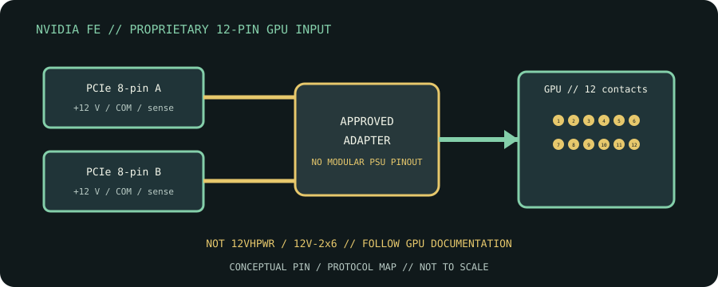

[ CABLE / ADAPTER RECORD // PCIE CEM 12VHPWR ]
NVIDIA Founders Edition 12-pin GPU Power Adapter
16 contacts: 12 power/return and four sideband sense; exact supply-end wiring is PSU-family specific.

CLASSIFICATION: Internal power cables. Identify protocol, direction, pinout and exact cable revision before connection.
Interface and capability
| Standard / protocol | NVIDIA Founders Edition proprietary 12-pin GPU power |
|---|---|
| Endpoint / pinout | 12-pin 2×6 GPU-side connector, fed by two PCIe 8-pin (6+2) plugs; this proprietary RTX 30-series Founders Edition interface is not 16-pin 12VHPWR/12V-2x6. |
| Capability / limits | Adapter is intended only for listed NVIDIA Founders Edition RTX 30-series cards and the supplied cable. There is no general 12-pin cable length/certification class. |
| Certification / length | Standards define interface requirements, not every assembly’s performance. Certification, mode, current/power rating, direction and maximum length belong to the exact product/revision and complete channel; verify its manufacturer specification. Do not infer certification from connector shape or marketing terminology. |
Compatibility & handling
- Connect both complete PCIe inputs using the included or manufacturer-approved adapter. Never mistake this 12-contact proprietary GPU end for a 16-contact 12VHPWR plug; PSU modular ends remain model-specific.
- Inspect connector keying, latch, contact condition, shielding, jacket and model/revision marking. Stop if contacts are bent, loose, scorched, corroded or mismatched.
- Route without tension or sharp bends; follow product bend-radius, strain-relief, current and environmental limits. Test at the intended protocol and mode—physical fit is not a compatibility test.
Sources & further reading
- NVIDIA GeForce RTX 30 SeriesPrimary manufacturer or standards reference for NVIDIA Founders Edition proprietary 12-pin GPU power; verify exact model and revision.